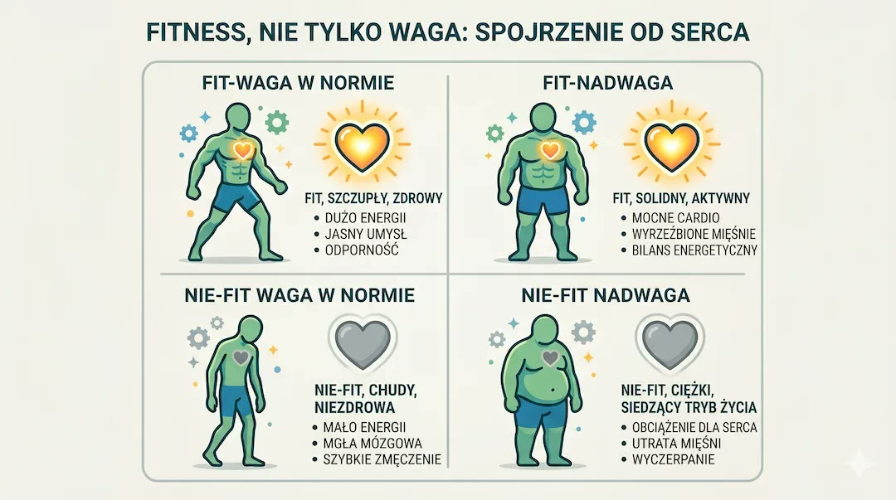
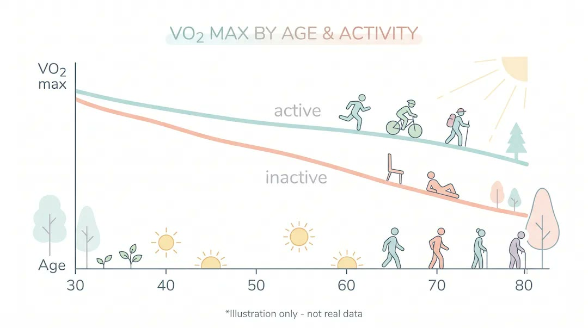
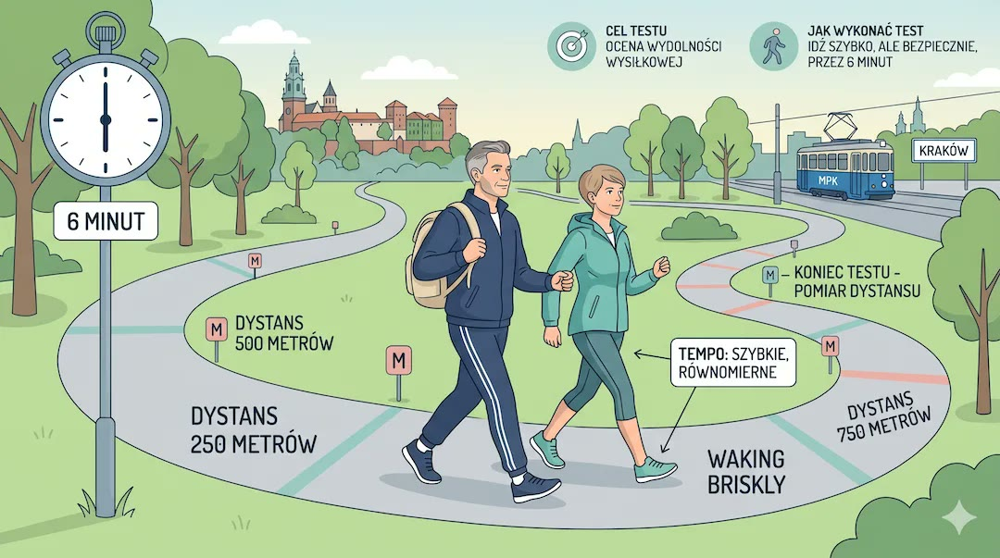
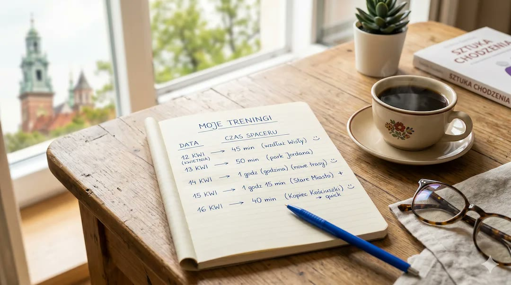

Możesz mieć parę kilogramów za dużo i nadal funkcjonować lepiej niż osoba szczupła, która łapie zadyszkę po jednym piętrze. Coraz więcej danych pokazuje, że wydolność krążeniowo-oddechowa (VO2 max) jest jednym z najsilniejszych wskaźników zdrowia i rokowania. Jeśli chcesz budować formę mądrze, zacznij od tego, co opisaliśmy też w przewodniku jak badać się przed treningiem po 50-tce.
Kluczowe wnioski
- VO2 max to praktyczny wskaźnik tego, jak sprawnie serce, płuca i mięśnie radzą sobie z wysiłkiem.
- Po 50-tce regularny trening aerobowy może istotnie poprawić codzienną sprawność i zmniejszyć zadyszkę.
- Najprostszy domowy monitoring to test 6-minutowego marszu i notowanie postępu co kilka tygodni.
W tym artykule dostajesz wersję "po ludzku": czym jest VO2 max, jak go ocenić bez laboratorium i jak zacząć poprawiać wydolność krok po kroku. Jeśli chcesz szerszy kontekst całego działu, zajrzyj też do sekcji Zdrowie i pełnej listy Porady.
VO2 max po ludzku: ile mocy ma Twój silnik
VO2 max to maksymalna ilość tlenu, jaką organizm potrafi wykorzystać w intensywnym wysiłku. W praktyce nie chodzi o sportowy rekord, tylko o to, czy Twój układ krążenia i oddechu daje radę w codziennym życiu: schody, szybki marsz, dłuższy spacer, zabawa z wnukami.
Im lepsza wydolność, tym niższy "koszt" codziennych czynności. To dlatego osoby o wyższym VO2 max częściej raportują większą energię, mniejszą męczliwość i łatwiejszy powrót do tętna spoczynkowego po wysiłku. Podobnie jak przy temacie siedzenia po 50-tce, liczy się nie jeden spektakularny trening, ale regularność.

Najważniejsza rzecz na start
VO2 max to nie test dla sportowców. To wskaźnik Twojej rezerwy na codzienne życie po 50-tce: schody, tempo chodzenia, odporność na zmęczenie.
Dlaczego temat wydolności jest ważniejszy niż sama masa ciała
Masa ciała nadal ma znaczenie, ale sama w sobie nie opisuje całego ryzyka. W przeglądach i metaanalizach regularnie wraca ten sam wniosek: osoby sprawne krążeniowo-oddechowo mają lepsze rokowanie niż osoby o niskiej wydolności, nawet jeśli te drugie są szczuplejsze. Opisuje to m.in. koncepcja "fat but fit".
To nie jest zachęta do ignorowania diety. To raczej zmiana priorytetu: zamiast skupiać się wyłącznie na centymetrach w pasie, warto równolegle budować wydolność. W praktyce najlepszy efekt daje połączenie obu kierunków, o czym piszemy też w tekście Dieta po 50-tce kontra nawyki.

Jak wydolność zmienia się z wiekiem i co realnie możesz na to zrobić
Z wiekiem VO2 max naturalnie maleje. To fizjologia, nie porażka. Dobra wiadomość jest taka, że tempo spadku jest mocno zależne od stylu życia. U osób regularnie aktywnych przebieg starzenia wydolności jest wyraźnie łagodniejszy niż u osób siedzących.
Największą różnicę robi konsekwencja: tydzień po tygodniu. Nawet umiarkowany, ale regularny ruch pozwala odzyskać część "zapasu" i zwiększyć komfort codziennego funkcjonowania. Jeśli dziś startujesz od zera, potraktuj to jak proces podobny do planu Trening 3x30 dla 50+ - małe kroki, ale bez przerw.

Prosty priorytet
Po 50-tce wygrywa regularność. Lepiej zrobić 4 spokojne treningi tygodniowo niż 1 bardzo ciężki i potem odpuścić na dwa tygodnie.
Cardio czy siła: co szybciej poprawia VO2 max
Jeśli celem jest poprawa VO2 max i mniejsza zadyszka, pierwsze skrzypce gra trening aerobowy: szybki marsz, rower, pływanie, marsz interwałowy. Trening siłowy jest bardzo ważny dla mięśni, kości i metabolizmu, ale sam zwykle słabiej poprawia pułap tlenowy.
Najlepszy układ to połączenie: cardio + siła. Możesz to ułożyć prosto: 3 dni ruchu tlenowego i 2 dni ćwiczeń wzmacniających. Jeśli masz wątpliwości, jak ruszyć bezpiecznie, zobacz też materiał Dlaczego bieżnia to za mało, gdzie rozpisaliśmy rolę obu bodźców.

Test 6-minutowego marszu: praktyczny pomiar bez laboratorium
W praktyce klinicznej test 6-minutowego marszu jest używany od lat jako prosty wskaźnik wydolności funkcjonalnej. W warunkach domowych też możesz go wykorzystać do monitoringu trendu.
Krok 1 Wybierz bezpieczny, możliwie równy odcinek.
Krok 2 Przez 6 minut idź szybkim, równym tempem (bez biegu).
Krok 3 Zapisz dystans i samopoczucie.
Krok 4 Powtórz po 4-8 tygodniach regularnych treningów.
To wystarcza, żeby widzieć realny postęp. Nie potrzebujesz zegarka za kilka tysięcy. Potrzebujesz konsekwencji i prostego dziennika, tak jak przy pracy nad nawykiem opisanej w artykule Motywacja zniknęła po 50.

Ile cardio tygodniowo po 50-tce
Wytyczne dla dorosłych i starszych dorosłych są konkretne: co najmniej 150 minut umiarkowanej aktywności tygodniowo albo 75 minut intensywnej, plus ćwiczenia wzmacniające minimum 2 razy w tygodniu.
W praktyce można to ułożyć bardzo prosto: 5 razy po 30 minut szybszego marszu i dwa krótkie treningi siłowe. Jeśli wracasz po dłuższej przerwie, zacznij mniejszym wolumenem i dokładaj stopniowo.
Codzienność, która buduje wydolność

Plan startowy na 3 tygodnie
Tydzień 1 3x po 20 minut szybszego marszu.
Tydzień 2 4x po 20-25 minut + 1 prosty trening siłowy.
Tydzień 3 4-5x po 25-30 minut + 2 treningi siłowe.
Jak mierzyć postęp bez drogiego sprzętu
Zapisuj trzy rzeczy: czas trasy, subiektywną zadyszkę (np. skala 1-10) i to, jak szybko wraca oddech po wysiłku. To bardzo praktyczny wskaźnik trendu, który po miesiącu pokazuje więcej niż pojedyncze ważenie.
Warto też notować "test codzienny": czy łatwiej wejść na to samo piętro, czy mniej męczą zakupy, czy zostaje energia wieczorem. Takie sygnały często pojawiają się szybciej niż widoczne zmiany sylwetki.

Najczęstsze pytania
Czy po 50-tce da się poprawić VO2 max bez biegania?
Tak. Szybki marsz, rower stacjonarny, nordic walking lub pływanie mogą skutecznie poprawiać wydolność, jeśli robisz je regularnie i stopniowo zwiększasz obciążenie.
Czy cardio wystarczy bez treningu siłowego?
Dla samej wydolności tlenowej cardio jest kluczowe, ale dla zdrowego starzenia potrzebujesz też bodźca siłowego (mięśnie, kości, stabilność). Najlepiej łączyć oba typy wysiłku.
Jak często robić test 6-minutowego marszu?
W warunkach domowych zwykle wystarczy raz na 4-8 tygodni. Częściej nie zawsze wnosi więcej, bo adaptacje potrzebują czasu.
Kiedy skonsultować plan z lekarzem?
Przy chorobach serca, niekontrolowanym nadciśnieniu, cukrzycy, bólu w klatce piersiowej, zawrotach głowy albo po dłuższej przerwie od ruchu warto zacząć od konsultacji medycznej.
Po 50-tce nie wygrywa ten, kto waży najmniej. Wygrywa ten, kto ma zapas oddechu na swoje życie.
Źródła
- Strasser B, Burtscher M. Survival of the fittest: VO2max, a key predictor of longevity? Front Biosci (Landmark Ed). 2018.
- Barry VW et al. Fitness vs. fatness on all-cause mortality: a meta-analysis. Br J Sports Med. 2014.
- American Heart Association. Importance of Cardiorespiratory Fitness in Clinical Practice. Circulation. 2020.
- CDC. Physical Activity Guidelines for Adults (150 min umiarkowanie / 75 min intensywnie + ćwiczenia wzmacniające).
- Mekary S et al. The 6-minute walk test in healthy adults and clinical populations - practical use and interpretation.
- Systematic review: 6-minute walk test performance and outcomes in older adults. BMC Geriatrics.
Uwaga: Artykuł ma charakter informacyjny i edukacyjny. Nie zastępuje konsultacji lekarskiej, diagnozy ani leczenia. Przy chorobach przewlekłych lub niepokojących objawach plan aktywności ustal z lekarzem.